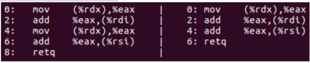

Some of the compiler optimizations that it is relevant for the programmer to know about
Function inlining
Constant folding and constant propagation
An expression or subexpression containing only constants (including floating-point numbers) will be replaced by the calculated result.
Pointer elimination
A pointer or reference can be eliminated if the target pointed to is known.
Common subexpression elimination
If the same subexpression occurs more than once then the compiler may calculate it only once.
Join identical branches
Eliminate jumps
Jumps can be avoided by copying the code that it jumps to
Loop unrolling
Loop invariant code motion
A calculation may be moved out of a loop if it is independent of the loop counter.
Induction variables
An expression that is a linear function of a loop counter can be calculated by adding a constant to the previous value.
Reorder instructions A compiler may reorder instructions for the sake of parallel execution. Modern CPUs are actually able to reorder instructions without the help of the compiler (see page 110), but the compiler can make this reordering easier for the CPU.
Algebraic reductions
reduce simple algebraic expressions using the fundamental laws of algebra. The compilers are better at reducing integer expressions than floating-point expressions, This is because algebraic manipulations of floating-point expressions may have undesired effects.
Devirtualization
An optimizing compiler can bypass the virtual table lookup for a virtual function call if it is known which version of the virtual function is needed.
Conditions for function inlining:
Advantages:
Function inlining has the complication that the same function may be called from another module. The compiler has to make a non-inlined copy of the inlined function for the sake of the possibility that the function is also called from another module.
inline hints to the compiler that you think the function should be inlined.
More importantly, it is used as a type of linkage specifier (basically external storage),
The gcc __always_inline macro (__forceinline in clang and icc) contains the current way to force gcc to do what it's told: to actually inline a function everywhere it's used, and not emit a redundant non-inlined copy. (On compilers that aren't broken, it can simply be #defined to "inline".)
-fno-inline (this is what the documentation says).-finline-limit=n, size of the functions in number of pseudo instructions) hence inlining the function regardless. It also inlines functions with alloca calls, which inline keyword never does.The noinline macro tells gcc a function should never be inlined. This is used to keep functions called from the _init section from being discarded while they're still in use.
the compiler is allowed to eliminate calls to copy or move constructors and the corresponding destructors even if these functions have side effects that include observable behavior. This is known as copy elision (or move elision for move constructors)
Since C++17, while the named RVO (NRVO) is still an optimization, the unnamed RVO is mandatory.
C makeC(int i) { return C(i); }C makeC(int i) { C ctmp(i); return ctmp; }Even the function is compiled in a separate compilation unit, RVO still takes place.
Not to use explicit std::move for return value.
C makeC(int i) { C c(i); return std::move(c); }Compiler will most likely elimite double checking if the function can be inlined.
In below example, assembly is the same regardless if inner if check (the if check in my_swap) is there or not.
template <typename T>
void my_swap(T* p, T* q) {
if (p && q) {
using std::swap;
swap(*p, *q);
}
}
void f(int* p, int* q) {
if (p && q) my_swap(p, q);
}
This applies the same to this common pattern:
C++ allows deleting a null pointer (nothing happens). But below check doesn’t impact the performance - with or without the extra check, there is only one comparison with null. You can look at the assembly output to convince yourself.
if (p) delete p;
The compiler does not have information about functions in other modules than the one it is compiling. The simplest way to solve this problem is to combine the multiple .cpp modules into one by means of #include directives.
A pure function is a function that has no side-effects and whose return value depends only on the values of its arguments.
Multiple calls to a pure function with the same arguments could be optimized out (eliminated) if it is visible. The optmization won't work if the pure function is defined in a different module or a function library.
The Gnu and Clang compilers and the Intel compiler for Linux have an attribute that can be applied to a function prototype to tell the compiler that this is a pure function.
__attribute__((const)) or __attribute__((pure))
_attribute_((const)) is the same as _attribute_((pure)) but without any access to global variables.
When accessing a variable through a pointer or reference, the compiler may not be able to completely rule out the possibility that the variable pointed to is identical to some other variable in the code.
// Example 8.21
void Func1 (int a[], int * p) {
int i;
for (i = 0; i < 100; i++) {
a[i] = *p + 2;
}
}
void Func2() {
int list[100];
Func1(list, &list[8]);
}
Here, it is necessary to reload *p and calculate *p+2 a hundred times, because the compiler is prevented from assuming that *p+2 is a loop-invariant expression.
Another example, the compiler cannot do any optimizations that would be invalid if a and b and x are bound to the same variable. This is known as aliasing: the same variable is known in the code under two different names or aliases.
void do_work(int& a, int& b, int& x) {
if (x < 0) x = -x;
a += x;
b += x;
}
// keyword restrict that informs the compiler that a particular pointer
// is the only way to access the value within the scope of the current function
void do_work(int& restrict a, int& restrict b, int& restrict x);
// creating a temporary variable often solves the problem as follows:
void do_work(int& a, int& b, int& x) {
if (x < 0) x = -x;
const int y = x;
a += y;
b += y;
}
Figure 10.1 shows the x86 assembly generated by GCC for the increment operations. With the aliasing, the compiler has to do two reads from memory (mov instructions). With the manual optimization, there is only one read. 
It is possible to tell the compiler that a specific pointer does not alias anything by using the restrict keyword, if supported.
restrict, __restrict,__restrict__).Most compilers also have an option for assuming no pointer aliasing (/Oa). Turning off this option requires careful analysis of pointer/references code.
The compiler still has to assume that the function g() might change the value of t, since it is passed in by reference. But with a local const variable b, the compiler can remove branch inside the loop.
template <typename T>
int f(const std::vector<int>& v, const T& t) {
// a local variable helps compiler
const bool b = bool(t);
int sum = 0;
for (int a: v) {
if (b) sum += g(a);
}
return sum;
}